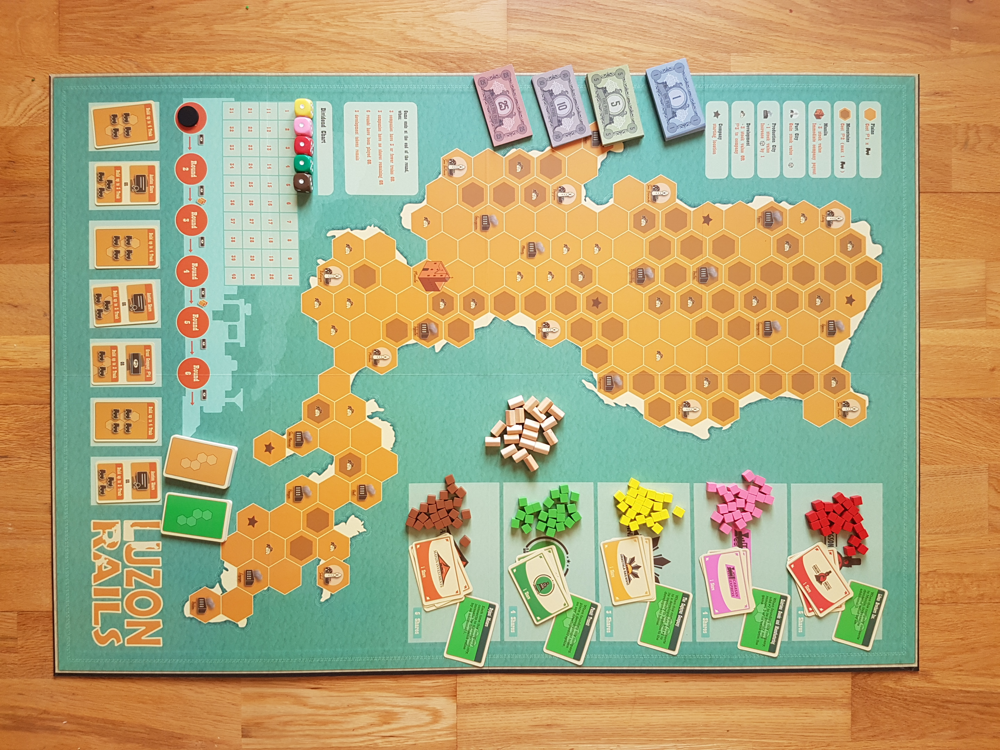

Letterpress and Movable Type Design Diary
Luzon Rails is a cube-rails game set on the island of Luzon - the largest and most populous island in the Philippines. It puts the players in the shoes of rail investors who buy stock in companies, seek to improve those companies, and amass wealth when company dividends pay out.

Game play is easy to grasp. Players invest in companies by buying stocks. Then players choose actions that let them develop any company that they have investments in. They can build track, raise funds, develop local industries, or just head back to the stock market!
With just those four simple actions, a exciting game of conflicting incentives arises. Multiple players can invest in the same company - now do you really want to put in the work to improve the Sinagtala Railways when other people are going to benefit? Maybe it's about time you simply ruined that company and ran its rail-tracks into the mountains!
The terrain has a huge effect on game-play. The wide open Northern region takes a long time to build in, but is relatively easy. The Southern peninsula is a maze, where companies will be regularly block one another. Manila is in the middle and offers huge payouts to companies that can reach that far.
Luzon Rails follows a tradition of cube-rails games - games like Chicago Express, Irish Gauge, and Paris Connection - and using those influences, tries to create something that represents the unique challenges of building and investing on this island. You see, Luzon's topography is difficult to work with, where large mountain ranges collide with wetlands, and an already established shipping industry means that coastal cities will be profitable only to rail networks that have already established effective routes. Planning your networks is of paramount importance!
Another feature that sets it apart from similar games is the action-selection mechanic. Luzon Rails is a card-driven game (and particularly inspired by the excellent political game, Wir Sind Das Volk). A set of cards are laid out face-up every round, from which players take turns to choose a card and take the associated action. And this means you roughly know which actions, and how many of them, can come up in the following round. Now, is it worth paying more in the auction for a share if you know there won't be any more auctions in this round? Is it worth grabbing the build-track action right now, since it's the only chance you'll have?
I'm not exactly sure how long I spent working on the Luzon Rails design - I don't keep very good design notes - but the version that I sent to blind-playtesters was dated December 2019. Maybe I started work on it around August 2019. And then the game went to Kickstarter in October 2020. Not a bad turnaround!
Because it does come from a tradition of cube-rails game, it was a relatively painless design. I recall the biggest challenge was figuring out the interaction between coastal shipping cities and inland production cities, and I tested a whole load of weird ideas. I also faced some unique challenges with the games' user interface. I wanted to have a way to show not only a company's value but a company's potential for growth. I settled on using dice, on which the face would show how healthy the rail network was and the die-position on a chart would show the company's current value.
A lot of work went into creating an interesting map to play on - with varied features to challenge the players and a layout that forces companies to interact. Because this is the center of the game, where all the action happens, I decided to make it into a oversized map and brought on Philippine artist, Jessi Cabasan, to make it stand out.
Luzon Rails funded on Kickstarter in October 2020. Of course, this was during the Covid-19 pandemic and I was otherwise stuck in the house with a lot of free time. What better time to run a Kickstarter campaign? (spoiler: there are much better times to run a Kickstarter campaign!) Several stretch goals were met - including upgrading the map to a massive mounted-board and adding a mini-expansion to the game (which I'll document in another post).
By early May 2021, after navigating a bunch of manufacturing hiccups, the final product was finished and shipped to backers. And it looks great! I'm super happy with how this one turned out. Thank you to everyone who helped get it to this point!